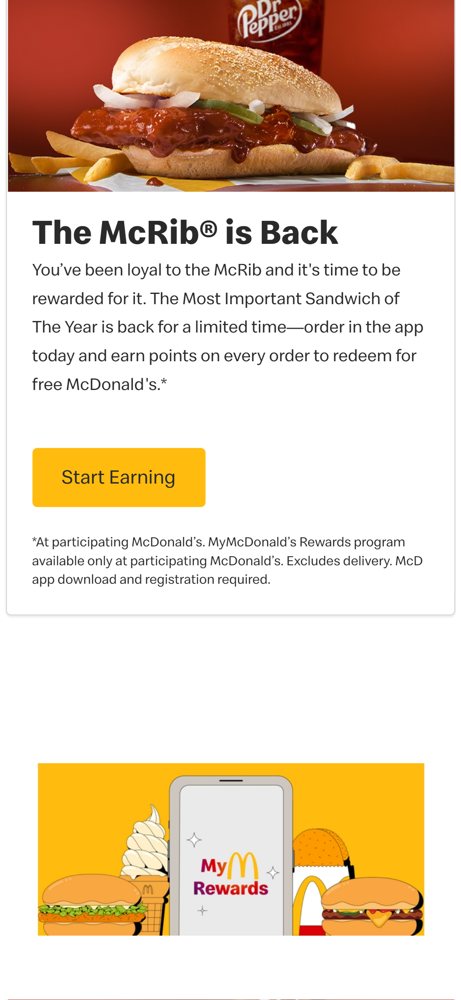

McDonald's
mcdonalds.com The Mcdonald's Website uses visual hierarchy extremely well. The first thing your eyes go to is the picture of the McRib, then your eyes go to the heading "The McRib is Back", then you see the yellow button that says "Start Earning", lastly your eyes fall on the short paragraph under the heading. Size and color are used in this example to make the most important things stand out first.
The google website uses white space wisely by keeping the design simple and clutter free. The user only sees what they need to. The page feels spacey and light.
YouTube
youtube.comThe youtube website uses proximity well by placing the image of the video and the infomation about the video closly together signifying that they are relate and belong together.